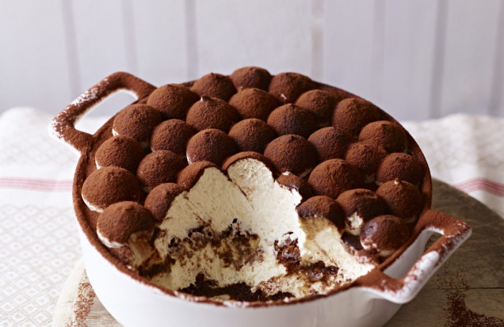

Italian Tiramisu Recipe

How to Make Italian Tiramisu
Italian tiramisu is without a doubt one of the most enjoyed Italian desserts across the globe and also happens to be my favourite, I’ve worked hard to perfect the recipe and after many requests, this version is made with pasturised eggs to avoid using them raw. This melt-in-your-mouth, authentic dessert is layered with rich mascarpone cream filling in between two layers of delicate sponge cake-like biscuits coated in Italian coffee…with some added cocoa and your favorite chocolate grated throughout.
The translation for tiramisu is “pick me up”, and after devouring a slice (or a few), the hit of chocolate and coffee will definitely have you feeling perky!
Ingredients
- 5 Extra-large eggs Free-range
- 1 packet Italian Savoiardi Lady Fingers biscuits
- 500 grams Mascarpone cheese 17.6oz. Typically 2 tubs
- 3-5 tbsp White sugar
- 700 ml Italian coffee 3 cups
- Cocoa powder
- Icing sugar
- A few squares of roasted almond dark chocolate optional
Equipment
- Pyrex/tray approx 9x13 inch size
- 2 Medium mixing bowls
- Medium size pot
- Cooking thermometer
- Hand mixer
- Spatula
Chocolate shaver
- Small sifter
- knife to cut tiramisu
- Plastic wrap
Instructions
- This Italian Tiramisu has absolutely no alcohol, making what I consider a tastier dessert. Separate the egg yolks and egg whites into two mixing bowls to get started.
- Next, we are going to pasteurize the eggs. Heat water until it begins to boil in a pot, then switch off the heat. (The steam from this will help heat the eggs!)
- Start with placing the bowl of yolks on top of the pot and use a hand mixer to gently whisk them until they reach maximum 60°C/140°F (about 1-2 minutes). Use a thermometer to get the most accurate temperature.
- Remove the bowl from the pot and add five tablespoons of white sugar to then continue mixing until light and frothy.
- Now, heat the egg whites over the hot water until you get stiff peaks.
- Add the mascarpone into the yolks and mix until you get a beautiful thick cream for the Italian tiramisu.
- Fold in the egg whites gently with a spatula to keep them from deflating.
- Next dip the Savoiardi biscuits (Lady fingers) in the cold coffee. Submerge each biscuit in the coffee for three seconds, letting the excess drip off.
- Add the dipped biscuits to the bottom of the pyrex pan with the sugar side down.
- Repeat until there is a single layer of biscuits in the baking dish; squish them in slightly if needed.
- Pour a thin layer of the mascarpone cream mixture on top, spreading with a spatula from corner to corner.
- Sift cocoa powder on top of the chocolate shavings, then repeat the layers, lining up the second layer of biscuits with the first.
- Break apart the rest of the chocolate for a topping for the Italian tiramisu, then sift the cocoa powder, covering the whole top of the Italian tiramisu.
- Cover with cling wrap and set in the fridge for four hours minimum – overnight will give you even better results.
Back to recipes